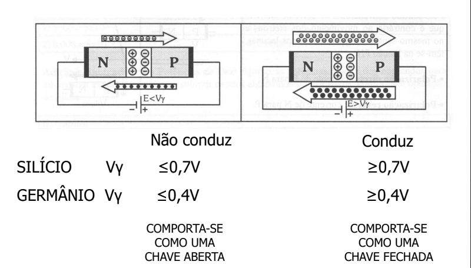
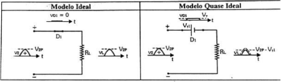
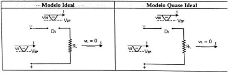

Retificador Meia Onda
O retificador tem como objetivo cortar uma parcela do sinal de entrada do sistema, garantindo que sua média não seja zero e, assim, melhorando a eficiência energética da máquina. O retificador de meia onda é notavelmente o mais simples da categoria, sendo implementado apenas com a utilização de um diodo alimentado com uma tensão de carga. Este diodo, ao ser alimentado corretamente, realiza a retificação no resistor de carga, como ilustrado na figura abaixo.

O desempenho de um diodo se caracteriza por momentos nos quais as tensões são conduzidas e interrompidas, sendo esse processo determinado pela polarização do diodo. Quando um diodo é polarizado com o lado negativo da fonte conectado ao seu polo negativo, ele entra em condução; por outro lado, se a polarização negativa da fonte estiver voltada para o lado positivo do diodo, ele não conduz. Esse comportamento é fundamental para o correto funcionamento do diodo e é essencial compreendê-lo ao projetar e analisar circuitos.
Uma Observação importante sobre os diodos, são tensão aplicada no sistema for menor que tensão de funcionamento do diodo, o diodo também não conduzirá até que a Tensão mínima seja alcançada.
Com base nisso, o retificador de meia onda opera completamente integrado ao sistema principal do diodo. Durante os semiciclos positivos, o diodo (D1) recebe a polarização de tensão (V2) diretamente da carga, o que viabiliza a condução da tensão. Esse processo é fundamental para o funcionamento adequado do retificador, permitindo a passagem de corrente nos momentos apropriados do ciclo de alimentação e contribuindo para a retificação eficiente do sinal. Essa interação entre a polarização do diodo e a polarização da carga é essencial para compreender o comportamento do retificador de meia onda.
Em seu modelo quase ideal, há uma perda de 0,7 volts devido à tensão mínima de condução do diodo.
Durante o semiciclo negativo, o diodo (D1) é inversamente polarizado pela tensão (V2) da carga, tornando-se, essencialmente, uma chave aberta para o sistema. Nesse cenário, o diodo bloqueia a corrente, impedindo a passagem da tensão negativa para o restante do circuito. Essa característica é crucial para a função de retificação do retificador de meia onda, assegurando que apenas os semiciclos positivos sejam conduzidos, contribuindo para a obtenção de uma saída de corrente unidirecional desejada.
Observação importante: mesmo após a retificação, a tensão de carga mantém uma frequência idêntica à do transformador de carga. Essa característica ressalta a capacidade do retificador de meia onda em preservar a frequência original proveniente do transformador. Dessa forma, o sistema retificado continua a refletir a natureza da fonte de alimentação, proporcionando uma saída com a mesma frequência do transformador de carga. Essa consistência na frequência é fundamental para garantir a integridade e a sincronia das operações no circuito.